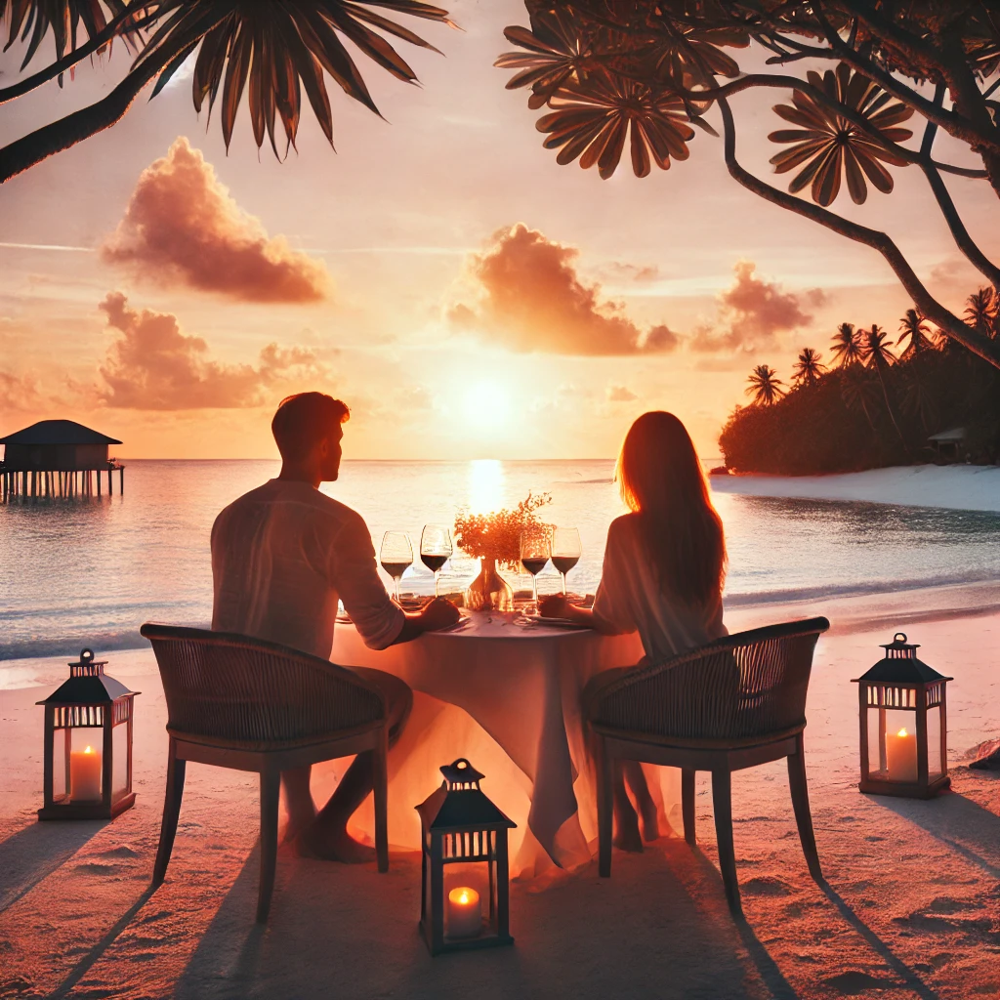
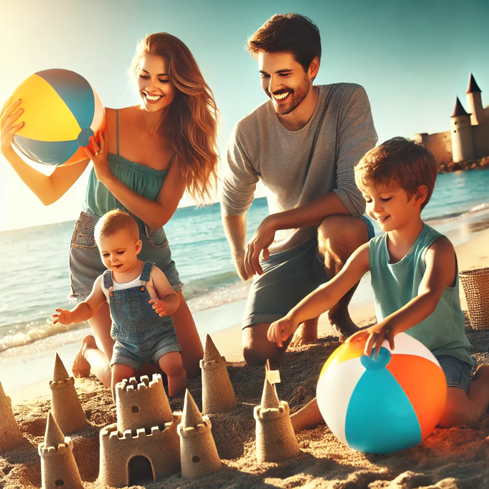

Vacanza da Sogno: Un Paradiso Tropicale
In un angolo di paradiso, una spiaggia con acque cristalline e sabbia bianca incanta i visitatori. Il tramonto colora il cielo di sfumature spettacolari, creando un'atmosfera magica.
Dettagli
Questa spiaggia tropicale è il luogo perfetto per una vacanza da sogno. Con le sue acque tranquille e le palme che ondeggiano dolcemente, offre un rifugio ideale per chi cerca relax e serenità.
Le attività includono snorkeling, immersioni e passeggiate lungo la spiaggia. I visitatori possono anche godere di cene romantiche al tramonto, con tavoli elegantemente apparecchiati direttamente sulla sabbia.
Citazioni
"È come vivere in un sogno," ha detto una turista, Maria Verdi. "Ogni momento trascorso qui è indimenticabile. La bellezza di questo posto è semplicemente mozzafiato."
Impatto e Reazioni
Le reazioni dei visitatori sono state estremamente positive. Molti hanno elogiato l'organizzazione e la bellezza naturale del luogo. Le famiglie si sono divertite giocando sulla spiaggia e costruendo castelli di sabbia, mentre le coppie hanno apprezzato i momenti romantici.
La spiaggia ha rapidamente guadagnato popolarità come destinazione ideale per matrimoni e lune di miele, grazie alla sua atmosfera intima e pittoresca.
Conclusione
Questa vacanza da sogno rappresenta un'opportunità unica per sfuggire allo stress quotidiano e immergersi in un ambiente paradisiaco. Che si tratti di una fuga romantica o di una vacanza in famiglia, questo luogo offre qualcosa di speciale per tutti.